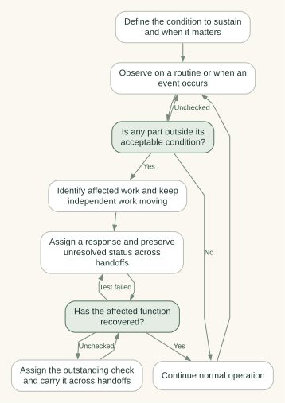

A car wash — keeping a place working every day
The owner wants the wash ready when the first customer pulls in. Each morning an attendant walks the bays, checks the equipment, and makes sure the supplies will last through the shift. On Tuesday, the pump in bay three won’t start. The shift lead accepts the attendant’s report as establishing that bay three cannot open now. A later test wash can change that answer. Under the standing plan, the lead keeps it closed and opens the ready bays. Aura Pro passes the same finding to the service technician, who investigates why the pump will not start. By Wednesday morning the repair is recorded and the test wash is still due. The incoming lead runs it. If it passes, the lead accepts the result, returns bay three to service, and closes the exception. The next morning’s readiness checks still come due.
The question
Starting condition. A desired condition must hold over time while demand, resources, and equipment states change. Central question. What needs attention now, and what can keep operating?
Decision path


Output. A current operating state and a set of exceptions with owners. A successful intervention closes one exception. The underlying obligation renews.
Related system capabilities
Resources and logistics
Make the needed people, materials, equipment, and access available together.
Work coordination and execution
Carry an authorized choice into physical work and follow it through handoffs.
Verification and acceptance
Determine what a specific check establishes and who may accept the result.
Human and agent interfaces
Give each participant the information and actions appropriate to their role.